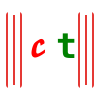
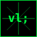

Softlendar
science · stars · cats · code
science · stars · cats · code
Softlendar will get you back to science, glowing stars, cats, latest research, computer science, programming and more. A collection of interactive web experiences built with care and curiosity.
Our current project — catlearning.fyi — is a cat-themed interactive web app where you can explore cat facts, pick toys, chat with an AI assistant, run power commands, and join a community of cat lovers. Built with Ruby on Rails 8 and PostgreSQL.
Our nw project — termirator — is a terminal-style interactive web app where you can run power commands, switch contexts, explore systems, and experience a cyberpunk HUD. Built with Shell, Rust, JavaScript, CSS, and HTML.

